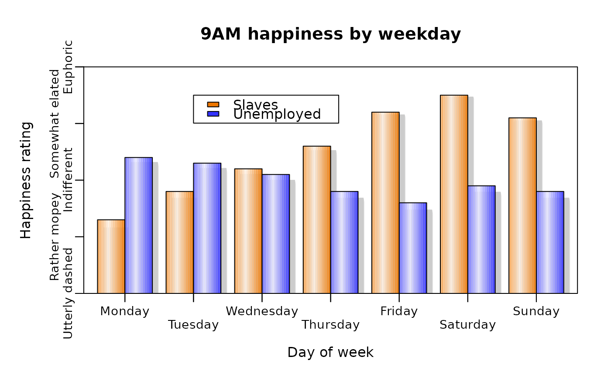
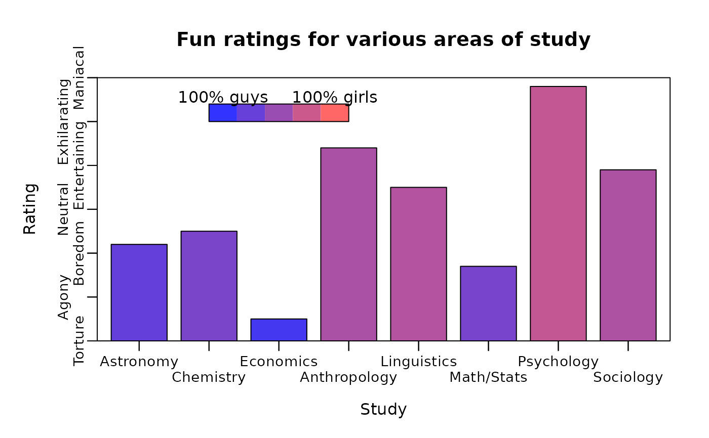
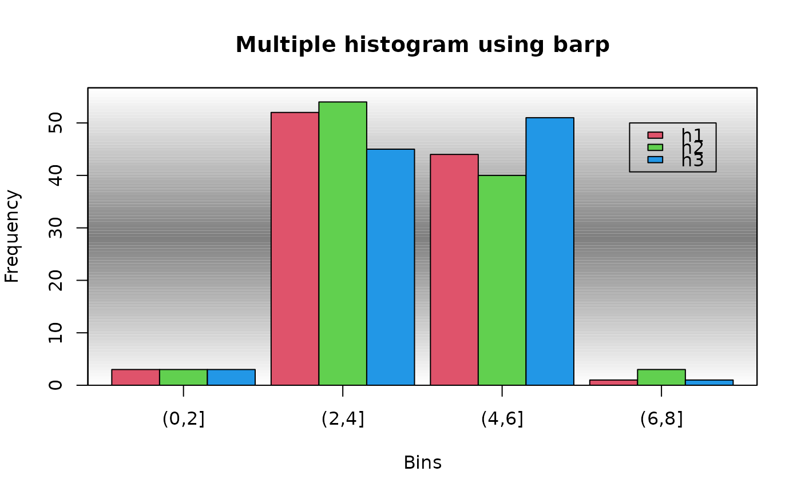
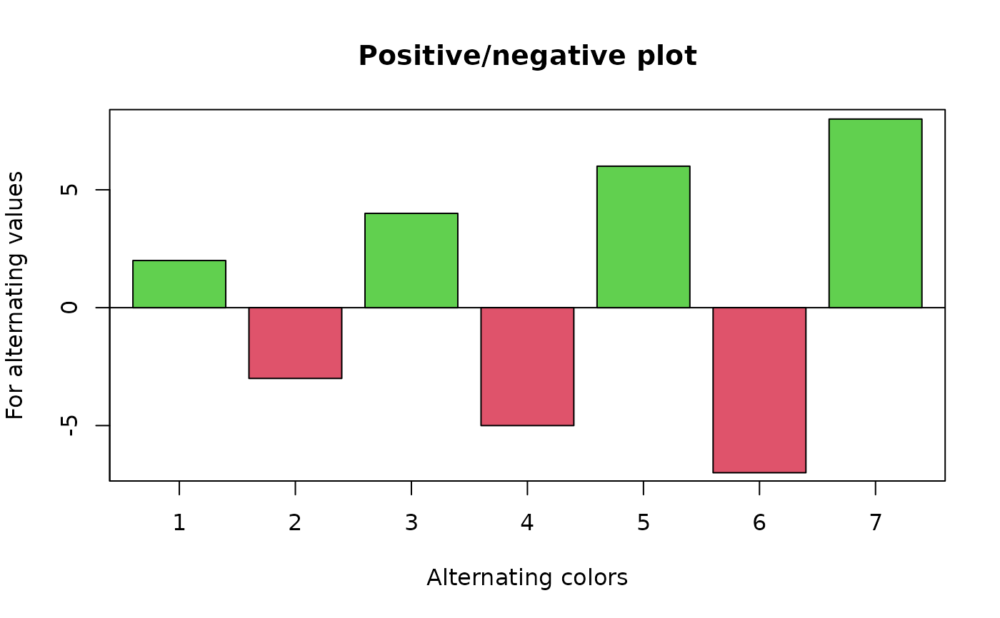

A bar plotting routine
barp.RdDisplay a bar plot
Usage
barp(height,width=0.4,names.arg=NULL,legend.lab=NULL,legend.pos=NULL,
col=NULL,border=par("fg"),main=NULL,xlab="",ylab="",xlim=NULL,ylim=NULL,
x=NULL,staxx=FALSE,staxy=FALSE, height.at=NULL,height.lab=NULL,
cex.axis=par("cex.axis"),pch=NULL,cylindrical=FALSE,shadow=FALSE,
do.first=NULL,ylog=FALSE,srt=NULL,...)Arguments
- height
A numeric vector, matrix or data frame that will be represented as the heights of bars.
- width
Half the width of a single bar or group of bars in X axis units.
- names.arg
The labels for the bars or groups of bars.
- legend.lab
Labels for an optional legend. If NULL, no legend is displayed.
- legend.pos
Optional position for the legend as a list with x and y components. If this is NULL, locator will be called.
- col
The fill colors for the bars. The default is no fill.
- border
The border for the bars.
- main
The title at the top of the plot.
- xlab,ylab
The labels for the X and Y axes respectively.
- xlim,ylim
Optional horizontal and vertical limits for the plot.
- x
Optional horizontal positions for the bars. Defaults to 1:length(height).
- staxx,staxy
Whether to use staxlab to stagger the X or Y axis tick labels. Can also omit the X or Y axes.
- height.at
Optional positions of the tick marks on the Y axis.
- height.lab
Optional tick labels for the Y axis.
- cex.axis
Character expansion for the axis labels.
- pch
Symbol(s) to fill the bars. See Details.
- cylindrical
Whether to give the bars a cylindrical appearance by shading them.
- shadow
Whether to place a shadow behind the bars.
- do.first
An optional string that will be evaluated before anything else is displayed on the plot. Useful for background colors or lines.
- ylog
Logical for whether a log scale is to be used. see details.
- srt
Rotation of axis labels if staxx or staxy is TRUE (see staxlab).
- ...
arguments passed to plot
.
Value
A list containing two components of the same form as height:
- x
The centers of the bars displayed.
- y
The heights of the bars.
Details
barp displays a bar plot similar to barplot but with axes and horizontal bar positions more like plot. Bars or groups of bars are centered on integral X values by default, and so both the width and spacing of the bars are controlled by a single number. If the user passes explicit x values, those values will determine the spacing. If height is a vector, single bars representing each value will be displayed centered at 1:length(height) unless the user has specified x values. If height is a matrix, 2D array, or data frame, a group of bars will be drawn for each column, with the values of the group taken from the rows of that column. Explicit x values cannot be used with a matrix, however, by adjusting the values of x, grouped bars can be displayed.
The values from freq or brkdn in the prettyR package can be used as the height argument. The value from table can also be passed as height, as can a 2D array returned from the by function.
Bars are empty by default but fill colors can be defined in several ways. If a single color is passed, all bars will be the same color. If height is a vector, colors will be recycled or some will be ignored if the length of col is not equal to that of height. If height is a matrix or data frame, the user may pass a vector of colors equal to the number of rows in height or a matrix of colors of the same dimensions as height. Other sequences of color will probably not result in an easy to interpret plot.
barp is intended to simplify illustrating categorical data for which both the variable designations and the categories are names, as on many multiple choice questions. height.at and height.lab allow the user to place labels on the vertical axis, usually representing the options. If staxx or staxy are TRUE, the labels on the horizontal or vertical axes respectively will be staggered, allowing the user to use many or lengthy variable or value labels. If srt is not NULL, these labels will be rotated counterclockwise by that value as angles in degrees instead of staggered.
If staxx or staxy are set to NA, the respective axis will not be displayed.
barp allows two enhancements that may be useful in those areas where fancy plots are appreciated. One is to give the bars a cylindrical look by shading the color. The other is to place an apparent shadow behind each bar. Both of these effects appear as though the light is coming from the upper left, and this is hard coded. You can add error bars by calling dispersion, but many advise against this.
If legend.lab is not NULL, a legend will be displayed. If legend.pos is NULL, locator is called to place the legend. On Windows, the alert may not appear on the console, and the function will appear to hang unless the user clicks on the console window or the plot.
The ylog argument produces a log scale on the y axis. Currently, neither pretty nor axTicks seems to produce a nice set of axis ticks, so it is best to pass the positions of these in height.at.
If the pch argument is not NULL, barp will display white bars filled with the symbols specified in pch. With grouped bars, this must be a matrix with the same form as the col argument. This option allows a black and white bar plot to be produced.
Examples
# get some extra room on the left
par(mar=c(5,5,4,2))
# make up some happiness data, as so many seem to do
happyday<-data.frame(Monday=c(2.3,3.4),Tuesday=c(2.8,3.3),Wednesday=c(3.2,3.1),
Thursday=c(3.6,2.8),Friday=c(4.2,2.6),Saturday=c(4.5,2.9),Sunday=c(4.1,2.8))
happylabels<-c("Utterly dashed","Rather mopey","Indifferent","Somewhat elated",
"Euphoric")
barp(happyday,names.arg=names(happyday),legend.lab=c("Slaves","Unemployed"),
legend.pos=list(x=2,y=4.5),col=c("#ee7700","#3333ff"),main="9AM happiness by weekday",
xlab="Day of week",ylab="Happiness rating",ylim=c(1,5),staxx=TRUE,staxy=TRUE,
height.at=1:5,height.lab=happylabels,cex.axis=0.9,cylindrical=TRUE,
shadow=TRUE)

# now do a plot with colors scaled to the sex ratio (real data!)
sexratio<-c(0.24,0.35,0.09,0.59,0.63,0.34,0.7,0.6)
# the fun ratings are once again a pack of lies
funrating<-c(3.2,3.5,1.5,5.4,4.5,2.7,6.8,4.9)
funstudy<-c("Astronomy","Chemistry","Economics","Anthropology","Linguistics",
"Math/Stats","Psychology","Sociology")
funlabels<-c("Torture","Agony","Boredom","Neutral","Entertaining","Exhilarating",
"Maniacal")
# xrange is used to get the colors to match the 0-100% scale
barp(funrating,names.arg=funstudy,main="Fun ratings for various areas of study",
col=color.scale(sexratio,c(0.2,1),c(0.2,0.4),c(1,0.4),xrange=c(0,1)),
xlab="Study",ylab="Rating",height.at=1:7,height.lab=funlabels,ylim=c(1,7),
staxx=TRUE,staxy=TRUE,cex.axis=0.9)
# here we want the full scale from zero to one
color.legend(2,6,4,6.4,legend=c("100% guys","100% girls"),
rect.col=color.scale(seq(0,1,by=0.25),c(0.2,1),c(0.2,0.4),c(1,0.4)))

par(mar=c(5,4,4,2))
# use barp to display a multiple histogram with a shaded background
# notice how the expression uses local variables inside the barp function
gradbg<-"gradient.rect(xlim[1],ylim[1],xlim[2],ylim[2],
c(1,0.5,1),c(1,0.5,1),c(1,0.5,1),gradient=\"y\",nslices=100)"
h1<-table(cut(rnorm(100,4),breaks=seq(0,8,by=2)))
h2<-table(cut(rnorm(100,4),breaks=seq(0,8,by=2)))
h3<-table(cut(rnorm(100,4),breaks=seq(0,8,by=2)))
hmat<-matrix(c(h1,h2,h3),nrow=3,byrow=TRUE)
barp(hmat,names.arg=names(h1),width=0.45,col=2:4,do.first=gradbg,
main="Multiple histogram using barp",xlab="Bins",ylab="Frequency")
legend(3.8,50,c("h1","h2","h3"),fill=2:4)

# now display a positive/negative plot
barp(c(2,-3,4,-5,6,-7,8),main="Positive/negative plot",
xlab="Alternating colors",ylab="For alternating values",
col=2+(c(2,-3,4,-5,6,-7,8)>0))
